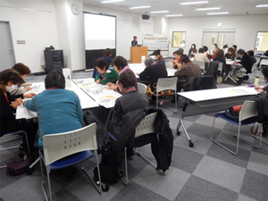

|
|
||||||
埼玉県消費者団体連絡会 同じ地域で活動する消費者団体どうしの相互理解の推進と課題の共有化、日常の取り組みの意見交換・情報交換。市町村の消費者行政の充実につながるきっかけづくりを目的に埼玉県の委託事業として3会場で開催し、延べ28団体80人が参加しました。『災害に備える-私たちのできる減災-』『次期埼玉県消費生活基本計画を理解するために』の学習と交流会をしました。
【概要】 1．学習『災害に備える-私たちのできる減災-』 講師：水島 重光氏(まちかど防災｢減災塾｣塾長) 自然災害に対する備えや、発災した時に地域の中で助け合う必要性などについて学びました。はじめに近年多発する自然災害を映像でふりかえり、減災チェックシートを使用して、災害への備えについて考えました。10のチェック項目には、まず自分が生き延びるための準備、情報の入手方法、家族などとの連絡方法、災害時の行動、日ごろからできる備えについて書かれており、自らの備えをふりかえることができました。地域の中での日常的なつながりの大切さにもふれられ、高齢の方などを地域で見守る体制をつくることが、減災や消費者被害防止にもなることを実感しました。 2．学習『次期埼玉県消費生活基本計画を理解するために』 講師：埼玉県県民生活部消費生活課より 2017年度4月より運用される新しい埼玉県消費生活基本計画について学習を行い、理解をすすめるとともに、消費者団体の果たすべき役割について考えました。参加者からは｢埼玉県で活動する私たちに直接関係することで、ぜひ会の学習として実施してみたい｣などの声が寄せられました。 3．交流会・2016年度消費生活関連事業調査結果報告 休憩をはさんで行われた交流会では、グループに分かれて、前半の学習を受けての意見交換、日常の活動に関する交流を行いました。その後、埼玉消団連事務局から2016年度消費生活関連事業調査結果の概要を説明し、各自治体での設置を目指す地域協議会設立には、地域で活動する消費者団体が一緒に考える姿勢で働きかけていくことが重要と呼びかけました。
※参加者アンケートより(抜粋)
|
||||||